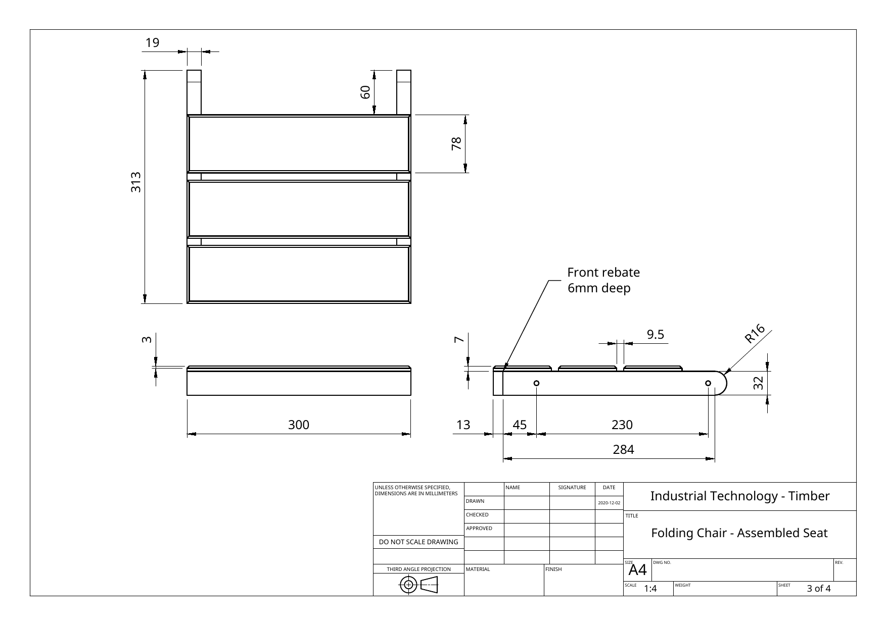

Bow
Curvature along the length of the face, similar to a shallow arch.
Industrial Technology – Timber
Weeks 3–4 guided learning

Module presentation
Use the presentation to preview From working drawing to cutting list, Selecting timber and recognising distortion, Dressing timber with the FEWTEL sequence before working through the theory, videos, checks and written evidence.
Two-week roadmap
Use working drawings to organise components, explain how timber is selected and dressed, and compare the behaviour and manufacture of fixed and moving joints.
Your work
Your entries save automatically in this browser. Use Print / Save PDF before leaving the page.
Theory 1

A cutting list is a manufacturing document produced from the working drawings. It identifies every component, the number required, the material and the required size. It helps the maker estimate material, organise paired parts, sequence preparation and detect missing information before timber is cut.
The cutting list must distinguish between finished dimensions and rough cutting sizes. A rough blank is often cut slightly longer, wider or thicker so saw marks, damaged ends and minor distortion can be removed during dressing. The amount of allowance should be controlled. Too little may leave insufficient material; too much wastes timber and machining time.
Matching and mirrored components should be clearly identified. For example, a pair of frame members may share the same finished size but require opposite countersink faces. Treating them only as two identical pieces increases the chance of producing two left-hand parts.
| Component | Quantity | Finished size | Rough allowance | Important note |
|---|---|---|---|---|
| Long frame member | 2 | Find from the component drawing | Allow for squaring and final dressing | Keep as a left/right pair |
| Seat side rail | 2 | Find from the seat drawing | Allow enough for the rounded end and front rebate | Hole and trench positions must match |
| Cross member | As specified | Custom fit after trenches | Cut slightly long initially | Final length depends on the assembled spacing |
| Seat or back slat | As specified | Consistent thickness and width | Minimal allowance if using prepared stock | Compare grain and appearance as a set |
Plan-reading task: use the linked drawings above. Enter the finished dimensions in millimetres for the two components, then compare your reading with the drawing.
Open project plansRead the labelled dimensions — never measure the on-screen drawing.
Theory 2

Timber is a natural material. Grain direction, growth rings, knots, moisture and storage conditions influence strength, appearance, machining behaviour and dimensional stability.
Before dressing, inspect each piece from its face, edge and end. A board may be straight enough for a short slat but unsuitable for a long frame member. A knot near a pivot hole can interrupt the fibres and concentrate stress. Short grain around a curved profile can break more easily because the fibres do not follow the full length of the shape.
Curvature along the length of the face, similar to a shallow arch.
Curvature across the width, so the edges or centre sit higher.
The four corners do not lie in one plane and the board rocks diagonally.
Curvature along an edge, making the board banana-shaped in plan view.
View along the face and edge to detect bow, spring and twist before cutting.

Plane with the fibres where possible to reduce tear-out and produce a cleaner surface.

Check the component after each stage rather than relying only on machine settings.

Secure hand-planing operations without damaging the finished reference surfaces.
DAR means Dressed All Round. Commercial DAR timber has been machined on its four long surfaces, but it may move after machining because of moisture changes or storage. Check flatness, squareness, dimensions, defects and grain orientation before accepting it for a critical chair component.
Theory 3
FEWTEL—Face, Edge, Width, Thickness, End and Length—is a controlled sequence for producing timber that is flat, straight, square and consistently sized. The sequence matters because each stage creates a reference for the next.
Establish one flat reference face and mark it as the face side.
Establish one straight edge square to the face side and mark it as the face edge.
Produce the second edge parallel to the face edge at the required width.
Produce the second face parallel to the face side at the required thickness.
Square one end to both reference surfaces and use it as the length datum.
Measure from the squared datum end and trim the opposite end to final length.
If width is produced before a straight reference edge exists, the two edges may be parallel but still curved. If final length is cut before one end is square, the component may measure correctly along one edge but be longer along the other. The order prevents one fault from being copied into later surfaces.
A jointer or buzzer establishes a flat face and a straight square edge. A thicknesser produces a second face parallel to the surface placed on its bed. A thicknesser does not automatically remove twist or cup if the underside is unstable because the machine can reproduce the distorted reference.
Use light, controlled passes, follow the teacher-approved SOP and inspect for nails, grit or other foreign material before machining. Cutting with the grain usually produces a cleaner surface. Never assume the machine setting is exact; measure the timber after each stage.
| Quality check | Tool or method | What it confirms |
|---|---|---|
| Flatness | Straightedge or stable surface | The face does not rock and has no significant hollow or high spot. |
| Squareness | Try square | The face edge and squared end are at 90° to the face side. |
| Width and thickness | Steel rule or suitable gauge | The component is consistent at several positions. |
| Length | Measure from the squared datum end | The final cut matches the cutting list without cumulative error. |
| Paired consistency | Direct comparison | Matching frame parts align before shaping and drilling. |
Theory 4

The mortise is a rectangular cavity cut into one component. The tenon is a matching tongue formed on the end of another component. The tenon cheeks provide long-grain contact, while the shoulders meet the surface around the mortise and help position the parts.
The tenon must fit closely without requiring damaging force. If it is too loose, the joint has poor support and relies excessively on adhesive. If it is too tight, forcing it can split the mortised component or crush fibres. A test fit is used to identify high spots and refine the tenon gradually.
Mortise-and-tenon joints resist pulling, twisting and racking when their surfaces align and they are glued appropriately. Their strength comes from geometry, grain direction, contact area and accurate manufacture—not simply from adding more glue.
A strong permanent joint for frames. It is intended to resist movement once assembled.
A recess that locates and supports another component over a contact surface.
A moving joint that uses a hole, bolt, washers and locknut to allow rotation.
Joint selection depends on load, direction, permanence, appearance and required movement.
The chair’s assembly notes specify a 6 mm trench for a cross member and bolted pivots where movement is required. A strong fixed joint cannot replace a pivot because it would stop the chair folding. A loose pivot cannot replace a fixed structural joint because the frame would rack.

Theory 5
A hollow-chisel mortiser combines a rotating auger bit with a square outer chisel. The auger removes most of the waste and carries chips upward, while the chisel pares the corners square. Correct clearance between the bit and chisel is essential so the bit can rotate freely and chips can escape.
The workpiece must sit flat against the table and fence and be clamped so it cannot lift, rotate or move. The mortise is normally formed through a sequence of controlled, overlapping plunges. Feed pressure should be steady. Forcing the handle increases load on the chisel, machine and workpiece and may cause binding.

Wear the required PPE while still relying on correct guards, setup and work holding.
The machine’s clamp or approved work holding prevents lifting and rotation.

A fine backsaw supports controlled cheek and shoulder cuts during practice work.
Measure and compare frequently rather than removing material at random.
Follow the SOP; confirm the chisel, auger, guards, alignment and extraction are suitable.
Locate the mortise from the face side, face edge and clear shoulder or end datums.
Hold the work flat and secure so it cannot lift or rotate during the plunge.
Remove waste progressively and allow chips to clear rather than forcing the chisel.
If the chisel binds, vibration changes or the work moves, stop and seek teacher assistance.
A tenon that begins crooked may have unequal cheeks, misaligned references or shoulders that are not square. A tenon that stops part-way may be slightly too thick or the mortise may contain compacted waste. Mark the high spots, remove very small amounts and check again. Random sanding can round the surfaces and create a loose joint.
Before practical work
Use this short checkpoint before moving from the drawings and practice joinery into project components. Show the completed checks to your teacher before using machinery.
Open assembly notesConfirm the 6 mm trench and custom-fit cross-member instruction before starting.
Guided practice
Each incorrect option explains the misunderstanding. Use the hint, return to the theory and keep trying until the question is mastered.
Apply your learning
Write a genuine first attempt, check the live guidance, compare with the appropriate response example and improve your explanation before self-assessing.
Finish the two-week block
Your answers save in this browser as you work, but browser storage is not the official submission. Save the completed page as a PDF before closing it.
No marks, answers or personal information are sent from this webpage.